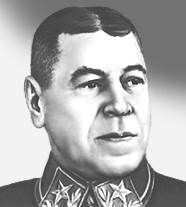
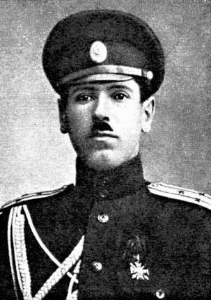

Шапошников Борис Михайлович
С сайта http://mega.km.ru

Шапошников Борис Михайлович (1882-1945), советский военачальник, маршал Советского Союза (1940). Участник Первой мировой войны, полковник. В Гражданскую войну в Высшем военном совете и Полевом штабе РВСР. В 1928-31 начальник Штаба РККА. В 1932-35 начальник Военной академии им. М. В. Фрунзе. В 1937-40 и в июле 1941 — мае 1942 начальник Генштаба, одновременно в 1937-1943 заместитель наркома обороны СССР. В 1943-45 начальник Военной академии Генштаба. Автор военно-теоретических и военно-исторических трудов («Мозг армии» и др.).Со страницы http://www.facts.kiev.ua/April2002/2604/
Невестка знаменитого полководца Слава Андреевна Шапошникова:
«Как вспоминала супруга Бориса Михайловича Мария Васильевна, Сталин действительно знал, что начальник Генерального штаба - человек глубоко верующий. Знал Иосиф Виссарионович также и о том, что Борис Михайлович никогда не снимал старинной нательной ладанки с очень древней казацкой иконкой, которой было почти 200 лет. Она передавалась в семье Шапошниковых, которые вели свой род от донских казаков, из поколения в поколение - от отца к сыну. Борису Михайловичу ее вручила мать. И будучи уже генералом, при советской власти, он всегда носил ее на груди. Даже при Сталине».
Из книги «Воспоминания» Б.М.Шапошникова

Я родился 20 сентября 1882 года в уездном города Златоусте Уфимской губернии, едва ли не в самом «мокром» по климату месте не только на Урале, но и на всей территории нашей страны. Как известно, борьба за существование не располагает простых людей к излишним размышлениям о древности рода. Деда своего со стороны отца я не знал, а сам отец скупился на воспоминания. Знаю только, что дед был донским казаком. Когда моему отцу исполнилось 15 лет, дед выписался из казачества и переехал на житье в город Саранск.…
Рано утром 13 августа 1901 года я приехал в Москву и остановился в номерах на Земляном валу, названия номеров уже не помню.
…
18 августа я приехал в училище на медицинскую комиссию. Беспокоился, окажусь ли годным? В те времена полагалось, чтобы объем груди равнялся половине роста, а так как мой рост достигал 175 сантиметров, то несоответствие объема грудной клетки вызывало у меня опасения. Моего старшего брата Александра три года призывали на военную службу, но так и не призвали, потому что объем грудной клетки не соответствовал его росту. Строгий медицинский осмотр прошел для меня вполне благополучно, и в ведомости, вернее в протоколе комиссии, я увидел отметку «годен». Конкурс аттестатов я выдержал успешно. Часов около 11 утро 29 августа я прочел вывешенное в канцелярии училища объявление о приеме в Московское пехотное училище, меня зачислили юнкером во 2-ю роту (по росту).
…
Когда я жил еще в Самарканде, произошло «кровавое воскресенье» 9 января 1905 года, которое нашло отклик и в офицерской среде. Подробности этого великой важности события в таком отдаленном городке, как Самарканд, были неизвестны, но стрельба войск по шедшим с иконами рабочим была таким происшествием, которое заронило сомнение в правильности принятых правительством мер не в одну офицерскую душу. Разговоров, во всяком случае, было много.
…
Время учения в академии падало на годы, когда в русской армии еще не было вполне устоявшихся взглядов на тактику. После поражения в русско-японской войне военная мысль офицеров русской армии была в процессе брожения, но мы стояли уже на той дороге, которая потом нашла отражение в Полевом уставе 1912 года. Мы были поклонниками смелой, наступательной тактики.
…